78人物thread公版✓ 判官过审哈姆雷特：想太多的聪明人，最容易一事无成
🎬 世界上最痛苦的悲剧，不是坏人得逞，而是好人有一切理由动手，却始终动不了手。
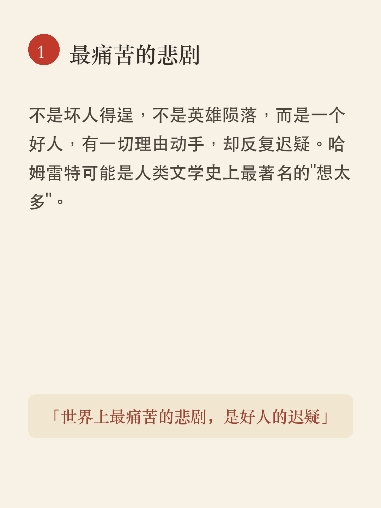
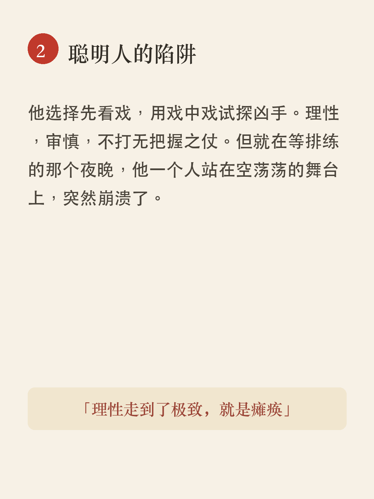
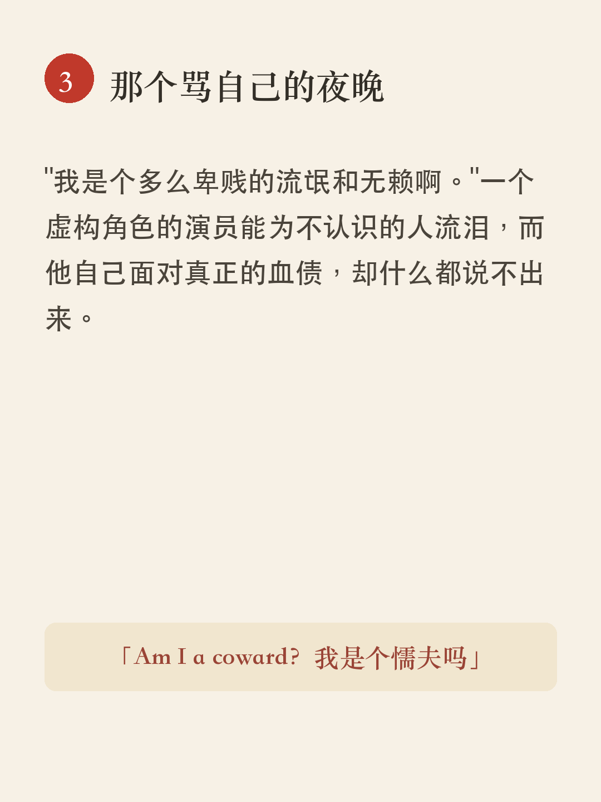
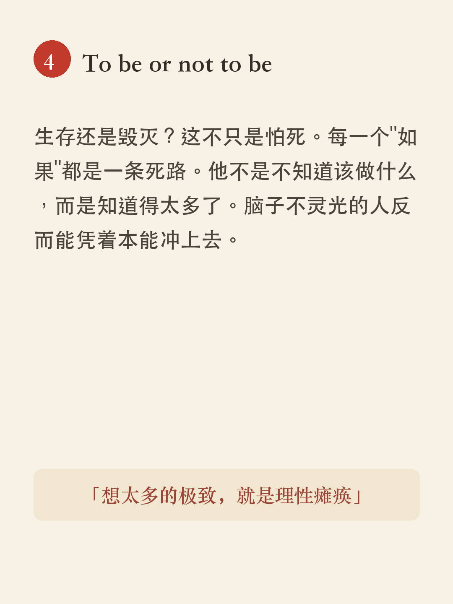
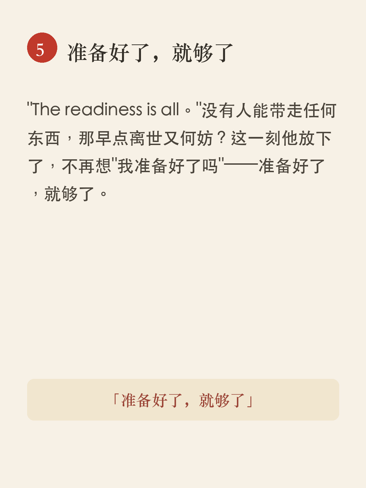
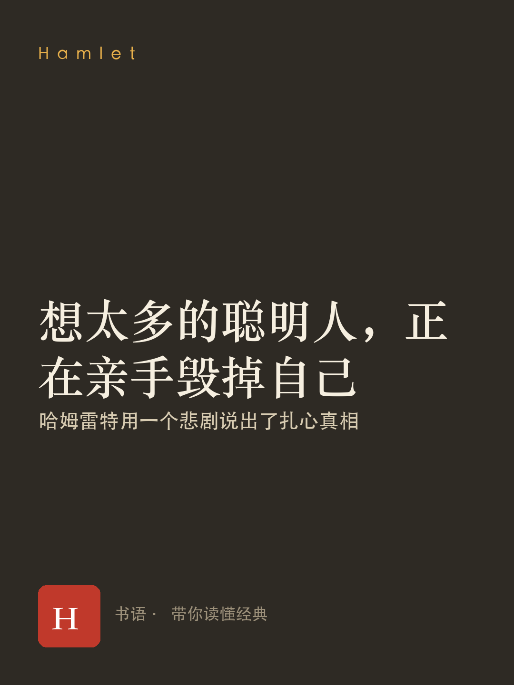
口播稿全文
你有没有想过，世界上最痛苦的悲剧，不是坏人得逞，不是英雄陨落，而是——一个好人，有一切理由动手，却在对克劳狄斯的复仇上反复迟疑。
今天我们聊一个人，他可能是人类文学史上最著名的“想太多”。
哈姆雷特。
他一方面自责怯懦、缺胆汁，另一方面又被过度思虑所困。
来，我们跟着他的内心轨迹走一遍。
---
父亲被叔叔毒杀，王位被篡夺，母亲火速改嫁凶手。杀父之仇，夺位之恨，伦理上的禁忌婚——任何一个普通人，早就提刀冲进王宫了。
但哈姆雷特没有。
他选择先看戏。
他让戏班子排了一出《贡扎古之死》，剧情几乎是他父亲被谋杀的翻版。他先安排了戏，随后在独白末才决定用“戏中戏”试探克劳狄斯的反应。
这很聪明，对吧？理性，审慎，不打无把握之仗。
但就在等戏班子排练的那个夜晚，他一个人站在空荡荡的舞台上，突然崩溃了。
他说了一段话，原文里叫"O what a rogue and peasant slave am I"——“我是个多么卑贱的流氓和无赖啊。”
他在骂自己。
他说：你看那个演员，演一个虚构的悲剧人物，他能让眼泪从眼眶里流出来，让脸色发白，让声音颤抖——全都是为了一个他根本不认识的角色，为了一个海枯石烂都不关他事的女人。
而我呢？
我有一个真正的凶手，一个真正的受害者，一个真正的血债——我应该比他演得好一百倍。
可是我站在这里，什么都说不出来。
他问自己：Am I a coward？——我是个懦夫吗？
然后他把自己的不作为归因为怯懦/缺胆（pigeon-liver'd, lack gall）。
他恨自己。
这段自责引向了他以戏试探的打算。
你看，愤怒可以驱动行动，哪怕那行动只是试探。
---
然后他进入了那个所有人都知道的独白。
To be, or not to be.
生存还是毁灭。
常见解读认为，这不只是怕死，这是理性走到极致后的瘫痪——良心与对未知的恐惧让我们裹足不前。
这就是问题所在。
他可能在权衡包括来世与道德后果在内的代价。
每一个“如果”都是一条死路。
他不是不知道该做什么。他知道得太多了。
而一个普通人，脑子没那么灵光，反而能凭着本能冲上去。恰恰是那些最聪明的人，被自己的分析能力困住了。
---
然后，故事走到最后。
他中了毒，命不久矣。
但在中毒之前，有一段对话，叫"The readiness is all"——“准备好了，就够了。”
他说：有一只麻雀在坠落，那是天意。如果死是现在，那就不会等到将来；如果不是现在，那迟早会来。
Since no man has aught of what he leaves, what is't to leave betimes？
没有人能带走任何东西，那早点离世又何妨？
这一刻，他放下了。
放下了对“该不该”的反复权衡，放下了对“后果会如何”的精密计算。他不再想“我准备好了吗”，而是——“准备好了，就够了。”
然后他上场，和雷欧提斯比剑。
---
所以你问我：哈姆雷特为什么迟迟不动手？
并非单纯懦弱，更包含对道德与来世后果的权衡。
他看见了行动的代价，看见了正义的边界，看见了自己灵魂里每一个犹豫的角落。
他不是不能行动，他是不敢承担那个“想清楚了再行动”之外的代价。
而代价就是——时间。
其迟疑带来一系列后果：权势巩固、亲情撕裂，他自己一步步走向死亡。
聪明是天赋。但聪明到被自己的脑子困住，就是诅咒。
哈姆雷特告诉我们一件事：
有些时候，你不需要想清楚再行动。你需要的是——准备好了，就够了。
想太多的人，最难跨出的那一步，往往不是能力问题，是“想清楚”这个执念本身。
放下那个执念。
行动。
78洞见scene公版✓ 判官过审「生存还是毁灭」根本不是在问死不死
🎬 你听到这句话的反应是'这一定是在问要不要死'——但哈姆雷特其实在问另一件事。
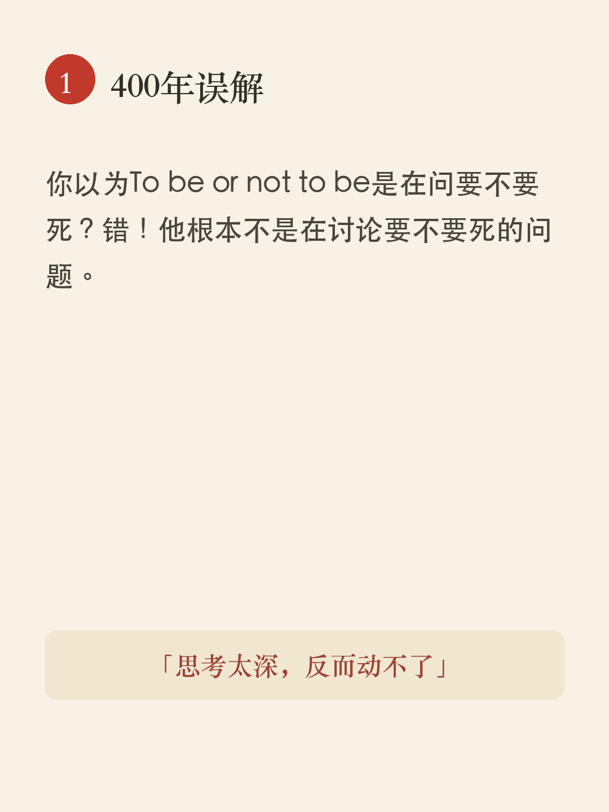
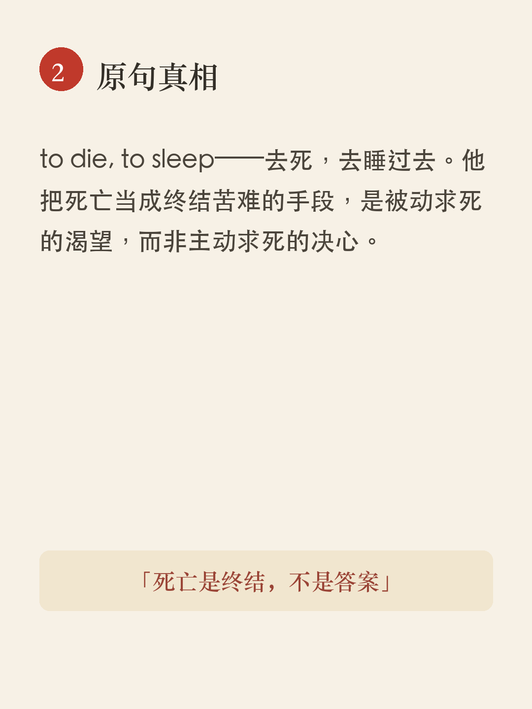
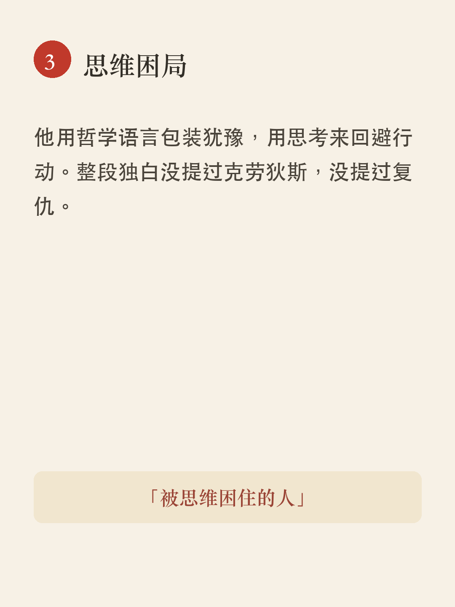
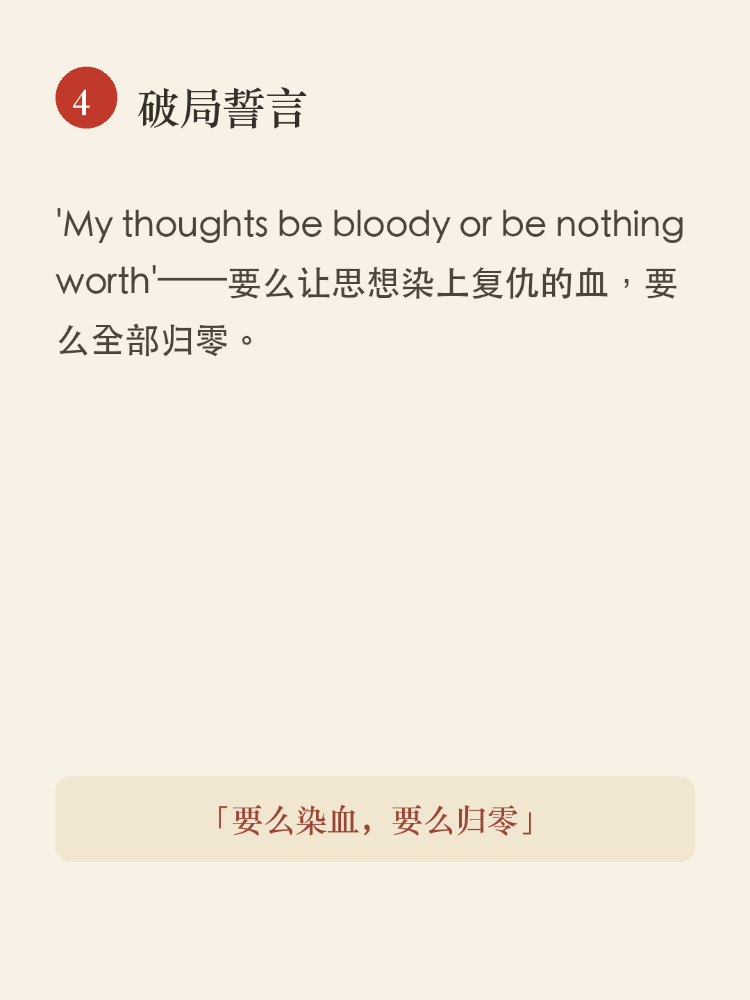
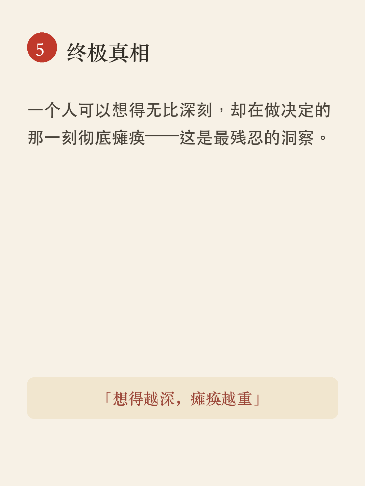
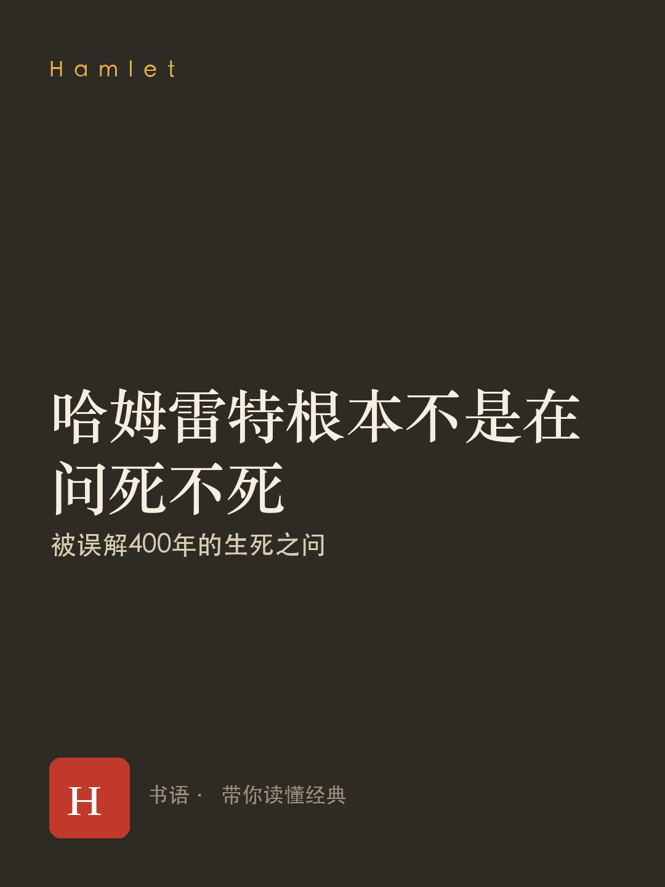
口播稿全文
你一定听过“生存还是毁灭”，你一定以为哈姆雷特在问：要不要死？
这个理解，从根上就窄了。
"To be or not to be"这句话，首先是生死之问——它探讨的是是否应该通过死亡来终结苦难。
请注意原文里的逻辑：哈姆雷特在问的是“to die, to sleep”——“去死，去睡过去”，是把死亡当作“终结苦难”的手段。原文的核心并列结构是"to suffer the slings and arrows of outrageous fortune"——承受命运的打击，和"to take arms against a sea of troubles"——拿起武器，对抗无尽苦难。随后的"to die, to sleep"承接"and by opposing end them"，是把“终结苦难”阐释为“死亡之眠”。
所以这句话首要是在问生死——是否应该以死终结苦难；同时在末尾扩展为——即使想行动，死亡之后未知的恐惧也会让人裹足不前。
答案呢？他紧接着说，这需要多大的勇气——"to take arms against a sea of troubles"——拿起武器，对抗无尽苦难。然后他话锋一转：问题是，行动需要付出代价，而死亡之后是什么，没人知道。
这才是关键。他不是在哲学上对死亡好奇，他对死后未知的恐惧让他“不敢动手”——这里的“动手”首先指不敢自杀，随后才扩展到一般意义上对宏大事业的裹足不前。**“因为死后会怎样谁都不知道，所以我不敢动手”——这是他的犹豫，不是答案。**
你再看整段独白，从头到尾，他没有提过克劳狄斯，没有提过复仇，没有提过他父亲被杀的冤屈。他只是在抽象地、普遍地、哲学地谈论“存在”和“毁灭”。这是生死哲学，但它也是一个被思维困住的人，在给自己的犹豫找台阶。
哈姆雷特的悲剧不在于他不知道怎么复仇，而在于他知道，但犹豫。他是一个被自己的思维困住的人。他脑子里有无数个声音在打架——杀他还是不杀？母亲淫乱是该原谅还是该愤怒？这一切到底是我的责任还是命运的把戏？他在刺杀克劳狄斯这件事上反复迟疑，但这不代表他的每一个时刻都化为辩论——他也有果断的行动，比如误杀波洛涅斯、戏中戏试探、最终杀死克劳狄斯。
但直到很晚，他才真正下定了决心。
看原文最后那一句：**"My thoughts be bloody or be nothing worth。"**——我的思想必须染上鲜血，否则就毫无价值。
这是全剧最关键的一句话。它标志着从自责转向决断的转折点。在他立下这个誓言之前，他其实已经有过多次行动——戏中戏、斥责母后、误杀波洛涅斯、改信处死R&G等。只是最关键的复仇迟迟没有付诸行动。现在，他要做最后一个决定：要么让这些思想染上复仇的血，把它们变成行动；要么，就让它们全部归零。
这就是“生存还是毁灭”的真正内核。它既是生死哲学，也是一个**行动瘫痪者**的绝望告白。他在问生命值不值得继续，也在问——我还能不能迈出那一步？
而最残忍的是，这个故事告诉我们：**一个人可以想得无比深刻，却在做决定的那一刻，彻底瘫痪。** 丹麦王子满脑子都是"To be or not to be"——他确实有过迟疑与行动的反复，但最终的答案是：他选择活下去，选择了复仇，也付出了生命的代价。
80洞见scene公版✓ 判官过审用一出戏抓一个人的罪，400年前就有了
🎬 一个人不敢直视你的眼睛？让他看自己的戏。
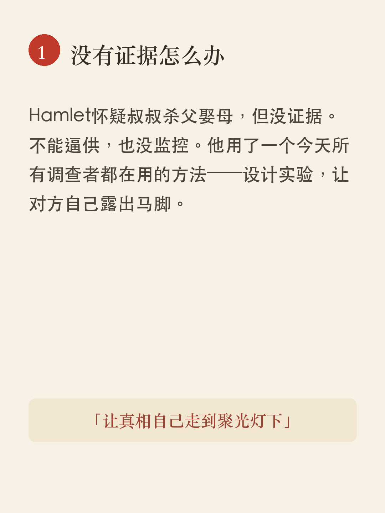
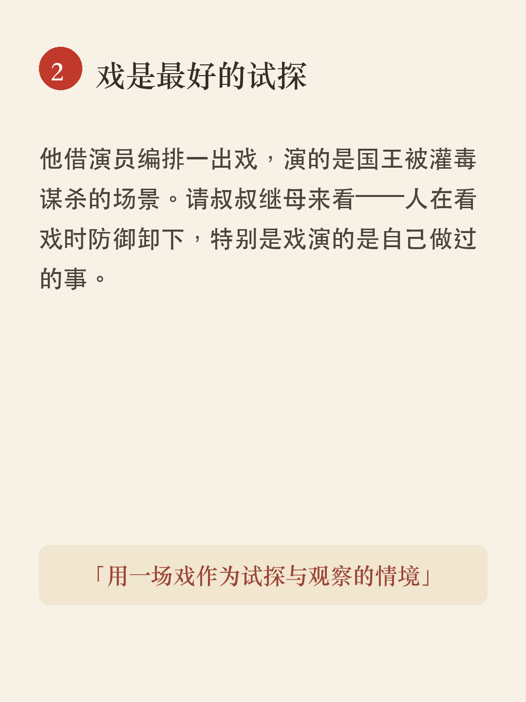
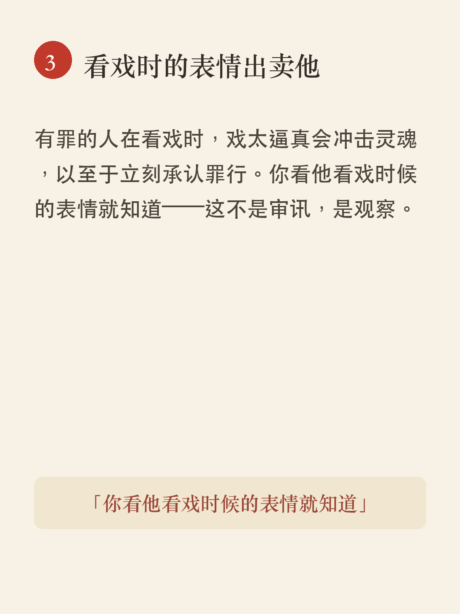
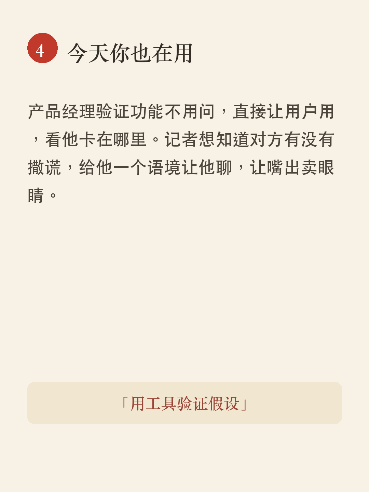
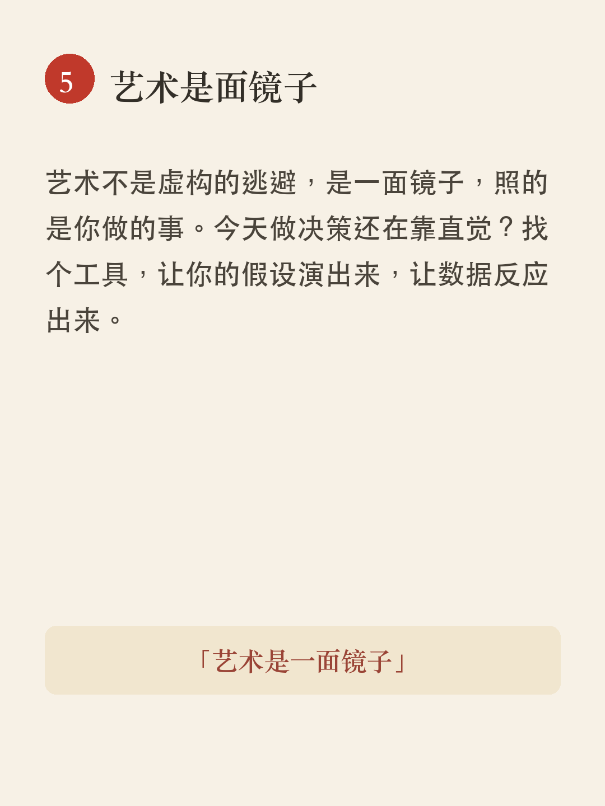
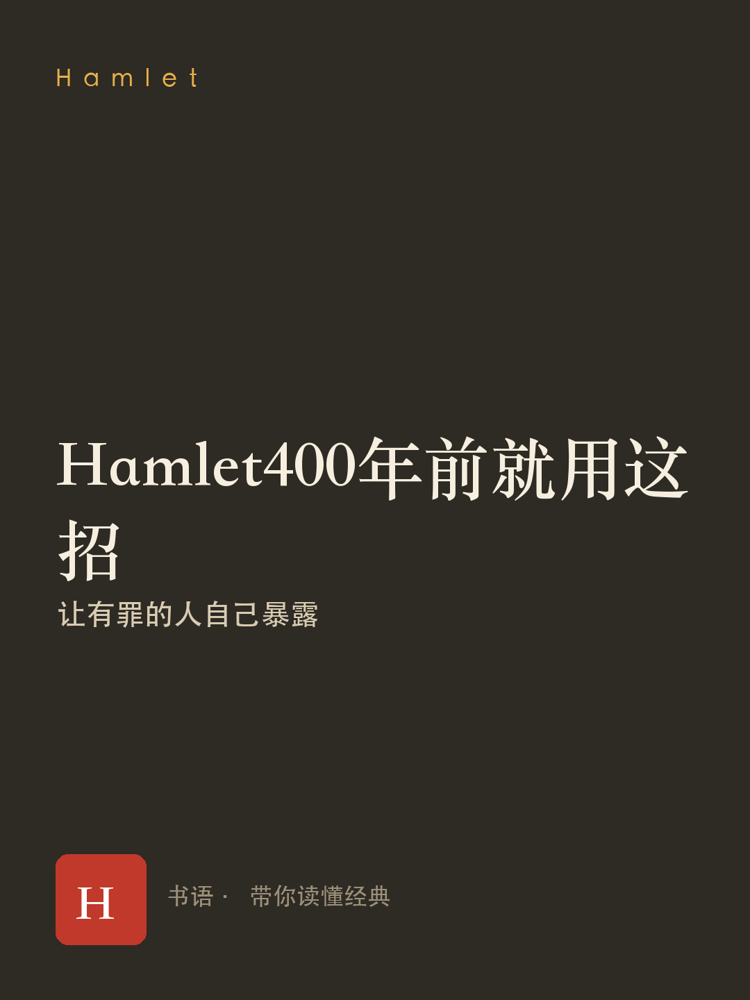
口播稿全文
一个人不敢直视你的眼睛？
让他看自己的戏。
《哈姆雷特》里，Hamlet怀疑叔叔杀了父亲、娶了母亲，但他没有证据。他不能直接拿刀去逼供，也没有监控录像。他做了一个今天所有做产品、做调研、做调查的人都在做的事——**设计一个实验，让对方自己暴露**。
他借到访的演员，亲自调整编排其演出。戏里演的，是一个国王被灌毒谋杀的场景。然后他告诉叔叔和继母：请看戏。
注意这个设计的精妙——他不直接对质，而是**用一场戏作为试探与观察的情境**。人在看戏的时候，防御会卸下来。特别是当戏演的是你自己做过的事，你会怎么反应？你会紧张、会坐立不安、会在某个节点上露出马脚。
原文里Hamlet怎么说的？他说：**"I have heard / That guilty creatures sitting at a play, / Have by the very cunning of the scene, / Been struck so to the soul that presently / They have proclaim'd their malefactions."**（有罪的人在看戏时，因为戏太逼真了，他们的灵魂会受到冲击，以至于立刻承认自己的罪行。）
翻译成人话就是——**你要是一个人心里有鬼，你看他看戏时候的表情就知道。**
这不是审讯，是观察。
产品经理想验证用户会不会用某个功能？不用问，直接让用户去用，看他卡在哪里、放弃在哪里。
记者想知道采访对象有没有撒谎？不用直接问，给他一个语境，让他聊，让他演，让他的嘴自己出卖他的眼睛。
这叫**用工具验证假设**，400年前莎士比亚就写进戏里了。
你猜怎么着？国王在灌毒桥段反常中止，印证了Hamlet的试探。
这叫什么？**艺术不是虚构的逃避，艺术是一面镜子。镜子照的不是你的脸，是你做的事。**
今天你做决策、做判断，还在靠直觉和猜测吗？找个工具，让你的假设演出来，让数据反应出来，让真相自己走到聚光灯下。
Hamlet比所有人早400年明白一件事：**你永远叫不醒一个装睡的人，但你可以让他看一场戏，让他自己从梦里惊醒。**
74映照scene公版✓ 判官过审丹麦烂透了——每个系统里都有一条蛀虫
🎬 不是一个人的问题，是整个丹麦都在溃烂。这就是为什么换掉一个坏人没用。
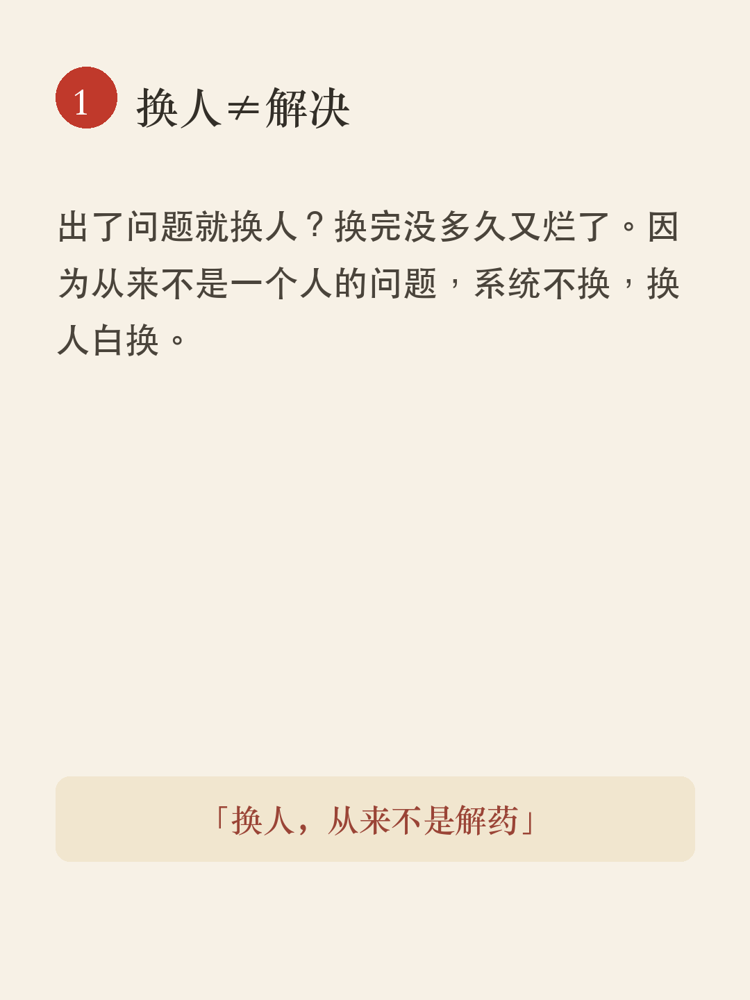
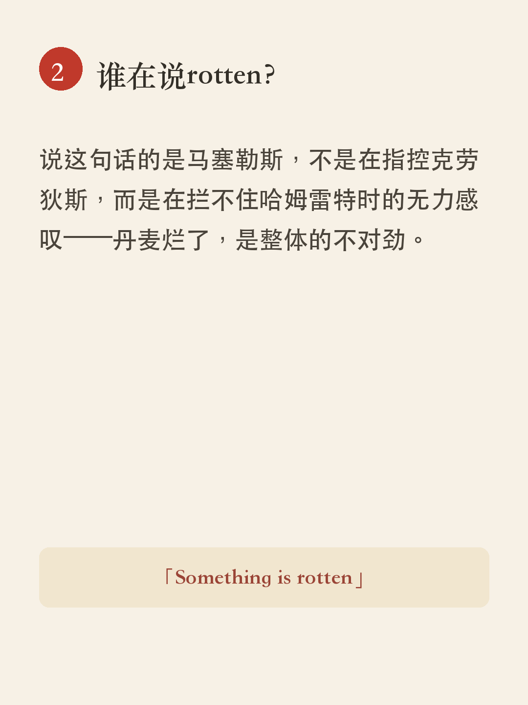
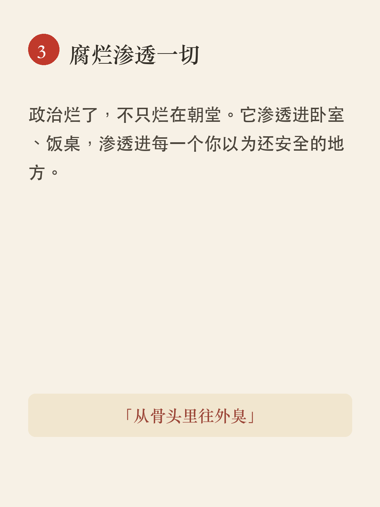
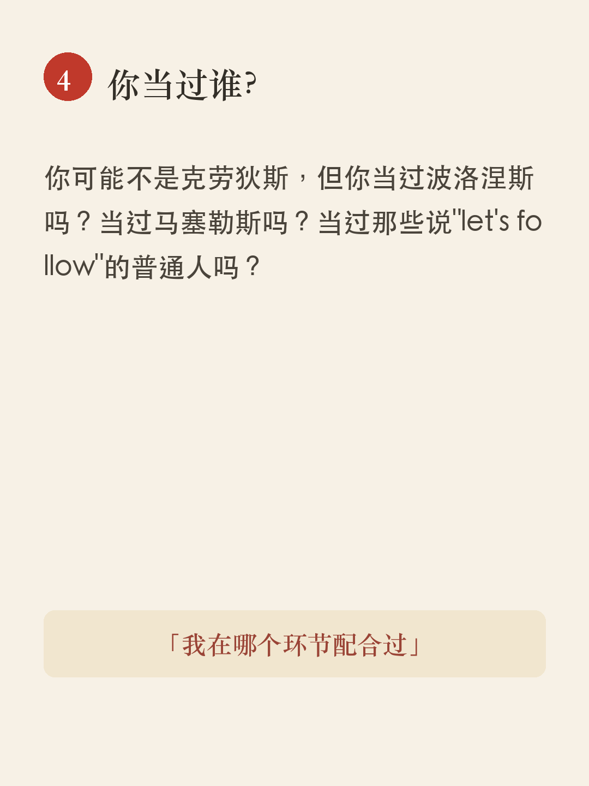
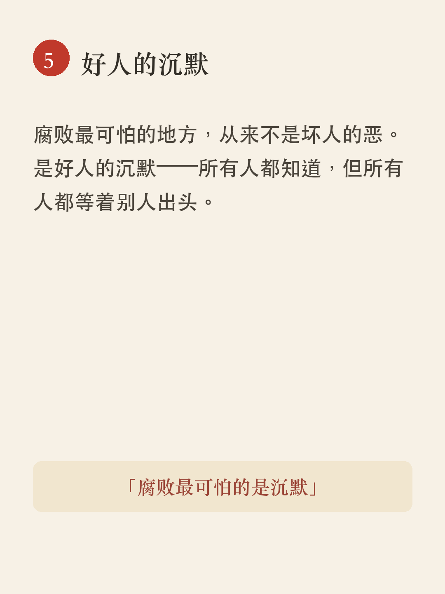
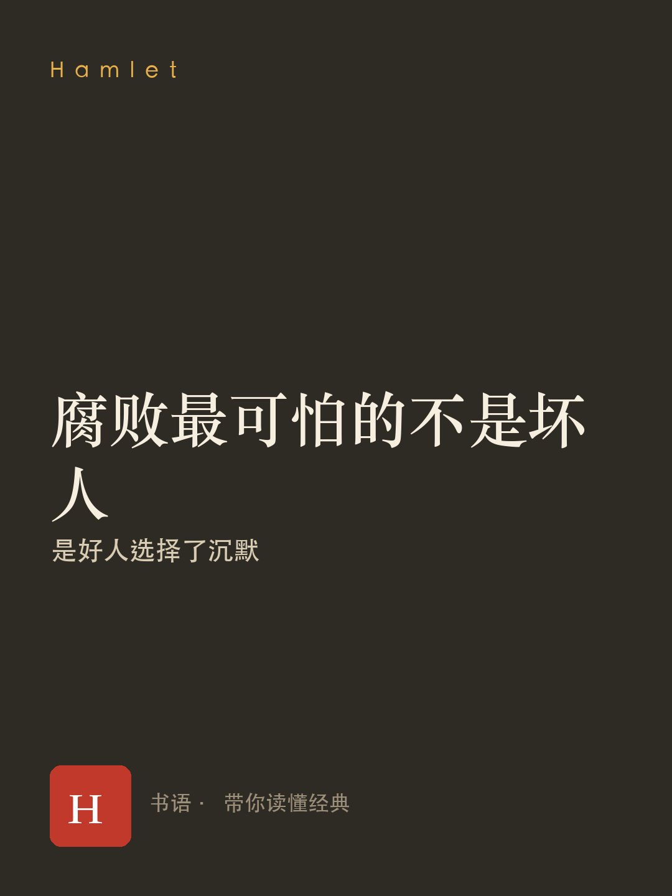
口播稿全文
你有没有发现，有些地方出问题的时候，所有人都在骂"那个人"？
换掉那个人就行了。换掉他，世界就清净了。
但你换完以后呢？往往过不了多久，那个"干净的"地方，又烂了。
为什么？
因为从来不是一个人的问题。
你去看《哈姆雷特》，丹麦王宫里那句著名的话——"Something is rotten in the state of Denmark"。很多人把这句话当成在说克劳狄斯：弑兄篡位，大恶人，整个国家的腐烂源头。
但你仔细看原文。
说这句话的人是谁？是马塞勒斯。
他是在什么语境下说的？
第一幕第四场末，鬼魂现身。哈姆雷特发了疯一样要跟上去，马塞勒斯拦他，霍拉旭拦他，拦不住。马塞勒斯说："Let's follow; 'tis not fit thus to obey him."——我们得跟着他，不能就这样听任他。
然后才说出那句话：Something is rotten。
在拦阻未果的情境后，马塞勒斯发出了对国家状态的感叹。
丹麦烂了——原文在此处通过马塞勒斯，让读者感受到整体现状的不对劲。
鬼魂后来对哈姆雷特说："I am thy father's spirit, Doom'd for a certain term to walk the night."——我是你父亲的魂魄，被囚在这夜里徘徊。
他揭露了自己的被谋杀，说了"unnatural"，并嘱托了复仇。而哈姆雷特在听到这一切时，反应强烈——"O God!""Murder!"——此时（1.5）仅鬼魂与哈姆雷特对话，文本未显示他人听见谋杀真相。
这就是腐烂的真相——不是一个人突然变坏，而是某种系统性的不对劲，在那一刻显露了出来。
当政治烂了，它不会只烂在朝堂上。它会渗透进卧室，渗透进饭桌，渗透进每一个你以为还安全的地方。
所以你回过头来看马塞勒斯那句话——Something is rotten。
Rotten，不是"有一个人很坏"。Rotten，是从骨头里往外臭。
克劳狄斯当然该死。但腐败从来不是一个凶手的个人问题。
这才是那句"rotten"真正可怕的地方。
今天的公司、单位、家庭，不也是这样吗？出了问题，所有人都知道，但所有人都等着"那个人"被换掉。换了又怎样？新的环境里，新的波洛涅斯很快就会出现，新的罗森克兰茨会簇拥上来，新的沉默会重新成为默契。
换人，从来不是解药。
真正的解药，是看见整个系统在腐烂，然后问自己：我在哪个环节，配合过？
你可能不是克劳狄斯。
但你当过波洛涅斯吗？当过马塞勒斯吗？当过那些说"let's follow"的普通人吗？
腐败最可怕的地方，从来不是坏人的恶。
是好人的沉默。
88映照scene公版约里克的头骨：再大的腕儿，死后都是一堆骨头
🎬 这大概是人类历史上对死亡最优雅的一次凝视。
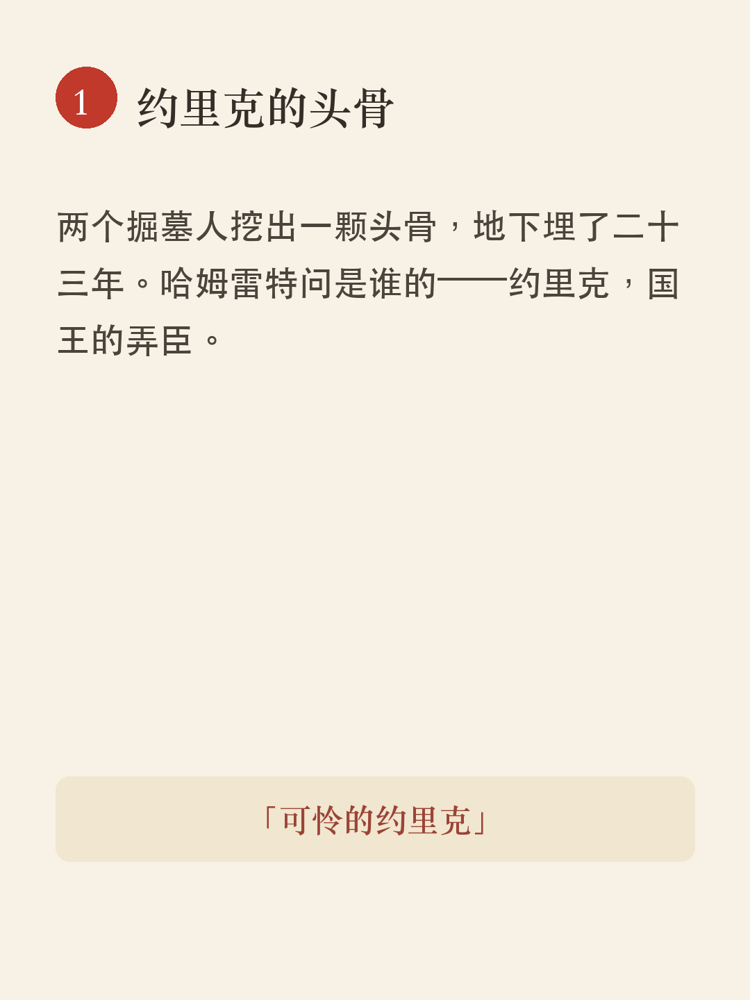
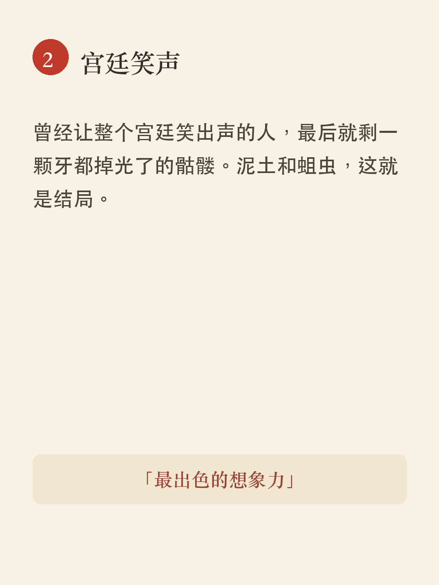
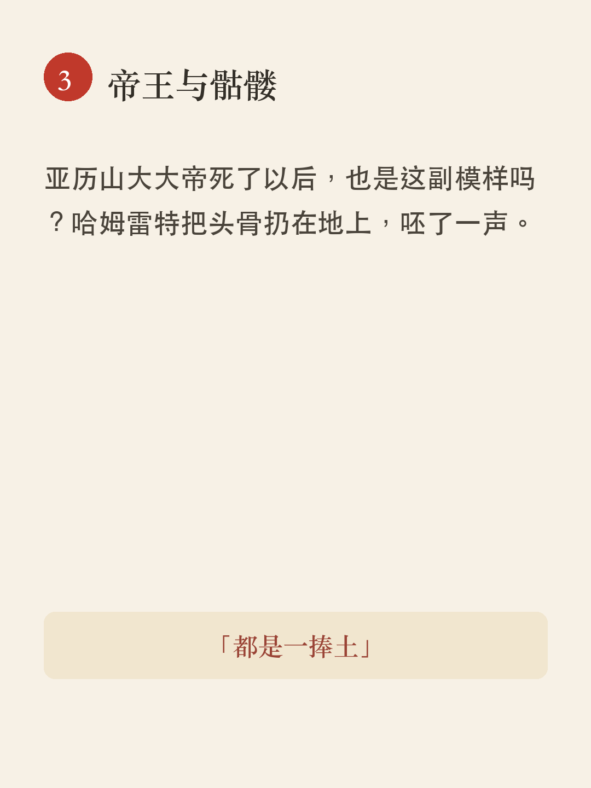
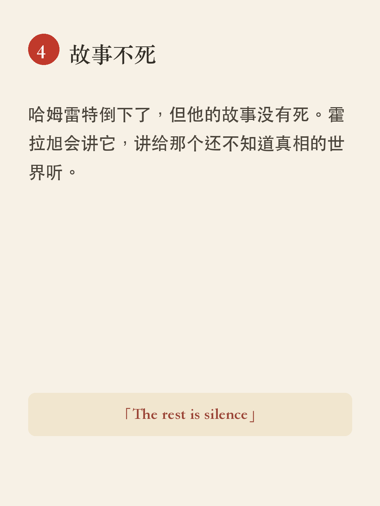
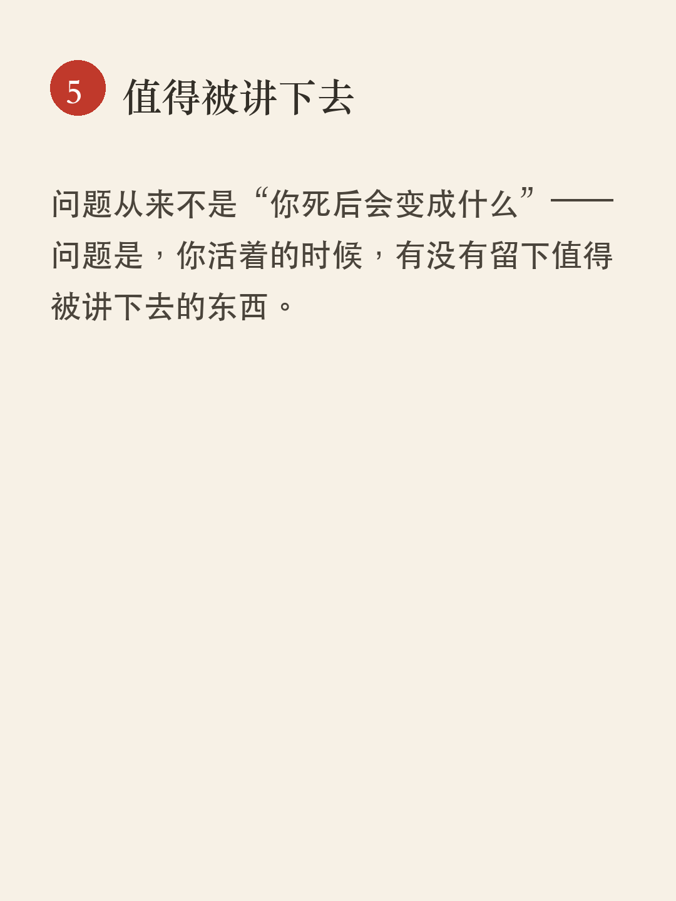
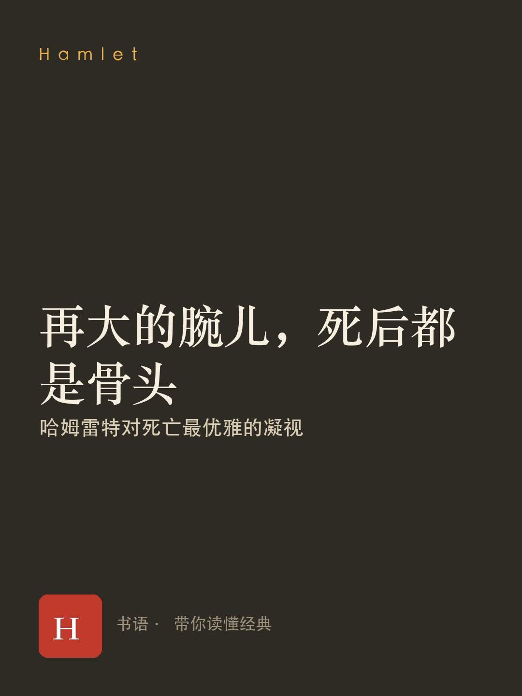
口播稿全文
你有没有想过一个问题——
当你躺在那儿的时候，你身边站的人，和你曾经仰望的人，最后会变成同一副模样吗？
这大概是人类历史上对死亡最优雅的一次凝视。
《哈姆雷特》第五幕第一场，墓地。哈姆雷特跟着霍拉旭走进一片正在挖墓的坟地。两个掘墓人在那儿铲土，其中一个掏出了一颗头骨。
这颗头骨在地下埋了二十三年。
哈姆雷特问是谁的。掘墓人说了一个名字——约里克，国王的弄臣，一个疯子。
哈姆雷特接过那颗头骨，沉默了。然后他说出了那段话：
“可怜的约里克。我认识他，霍拉旭，一个有无限趣味的人，最出色的想象力。他曾经背过我一千次；可现在，想起来就令我作呕。这里是我吻过不知多少次的嘴唇。现在谁来嘲笑你的鬼脸？你的跳跃？你的歌声？那些往常能把满桌人逗得哄堂大笑的玩意儿？一样都没有了。”
一个曾经让整个宫廷笑出声的人，最后就剩这么一颗牙都掉光了的骷髅。
但哈姆雷特没有停在感慨上。他接着问霍拉旭一个问题，这个问题让整个段落的重量翻了一倍：
“你觉得亚历山大大帝，死了以后，也是这副模样吗？”
霍拉旭说，是的。
哈姆雷特说了一声“呸”，把头骨扔在地上。然后他说了一段话：
“我们总归要回到什么卑微的用途上去，霍拉旭！为什么想象不能追踪亚历山大的高贵骨灰，直到发现它在堵一个啤酒桶的塞子？凯撒大帝，死了以后化成了泥土，也许正好用来堵住一个窟窿眼挡风。啊，那个曾经令世界战栗的尘土，现在却在给一堵墙抹灰。”
这就是哈姆雷特在做的事情——他用最日常、最粗俗的意象，把最崇高的东西拉回到地面。帝王将相、功业千秋，最后可能正在某个酒馆的角落里堵窟窿。
这不是虚无主义。这是哈姆雷特在告诉你：那个让你害怕的，让你敬畏的，让你觉得高不可攀的东西，和约里克那颗头骨之间，隔着的不是丰功伟绩，只是一层土。
但故事还没有完。
全剧最后，哈姆雷特中了毒箭。他知道自己要死了。他对霍拉旭说了一段话：
“若你曾经把我放在心里，就暂时离开你的安宁，在这个残酷的世界里继续呼吸，把我的故事讲给后人听。”
然后他说出了最后一句话：
“The rest is silence.”
此外沉默。
福丁布拉斯带着军队进场了。他赢了。哈姆雷特死了。丹麦改姓了。
但霍拉旭站在那儿，说了一句：“现在，一颗高贵的心碎裂了。晚安，亲爱的王子，愿天使的歌声送你安息。”
你发现没有——哈姆雷特死了，但他的故事没有死。霍拉旭会讲它。讲给那个还不知道真相的世界听。
约里克被遗忘了，只剩一颗头骨在土里。但哈姆雷特留下了他的故事。
所以死亡是平等者吗？是的，在物质层面，约里克和亚历山大的骨头最后都是土。但在意义层面，不一定。
你活过的东西，你讲过的真话，你选择站住的那一刻——这些不是骨头，这些是故事。而故事，是唯一能跟死亡讨价还价的东西。
所以问题从来不是“你死后会变成什么”——
问题是，你活着的时候，有没有留下值得被讲下去的东西。
74映照thread公版✓ 判官过审奥菲莉娅：被两个男人毁掉一生的女人
🎬 父亲利用她，情人疏远她，最后她只能抱着花去死。
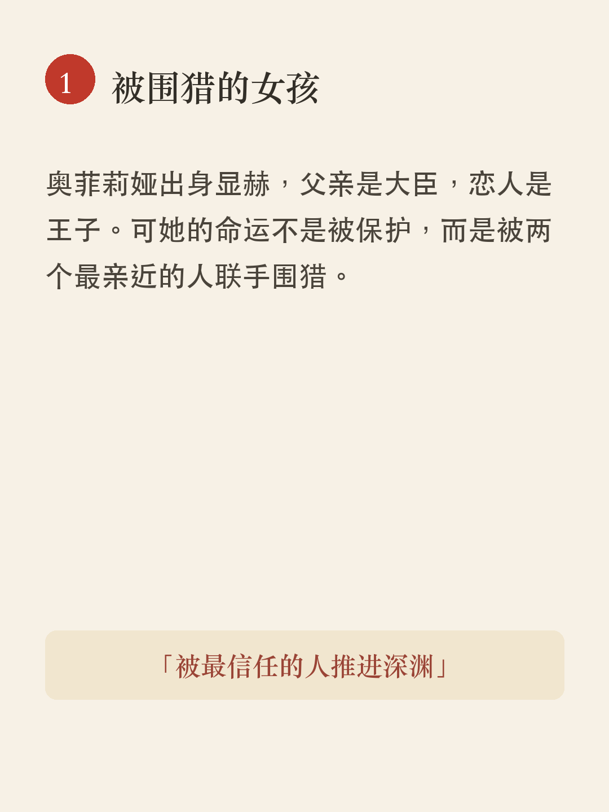
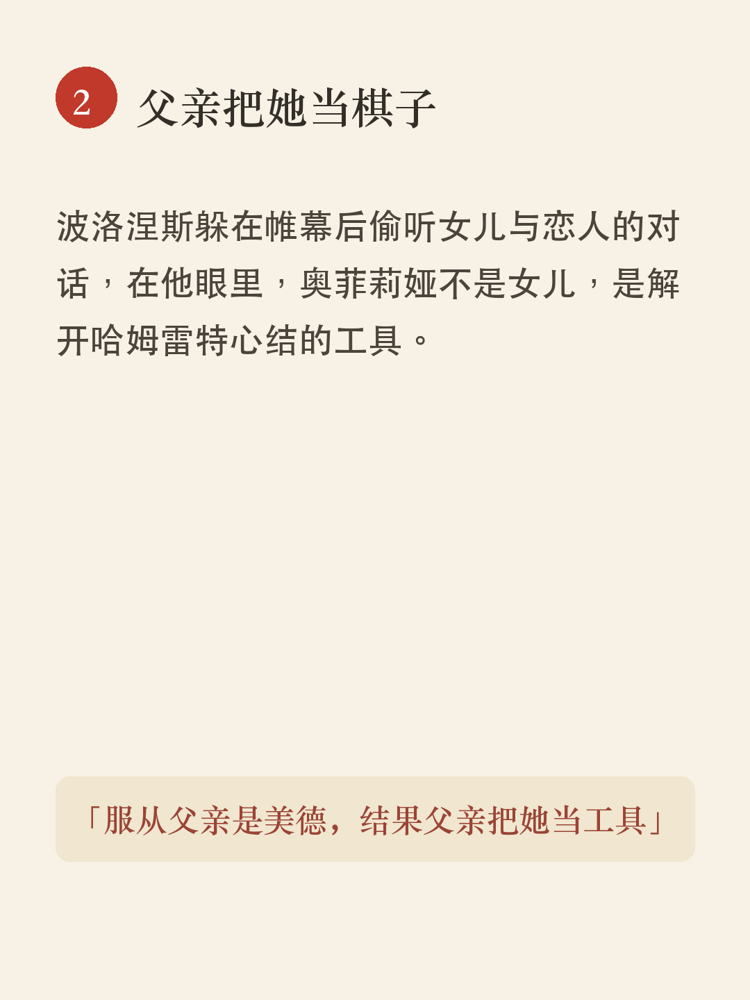
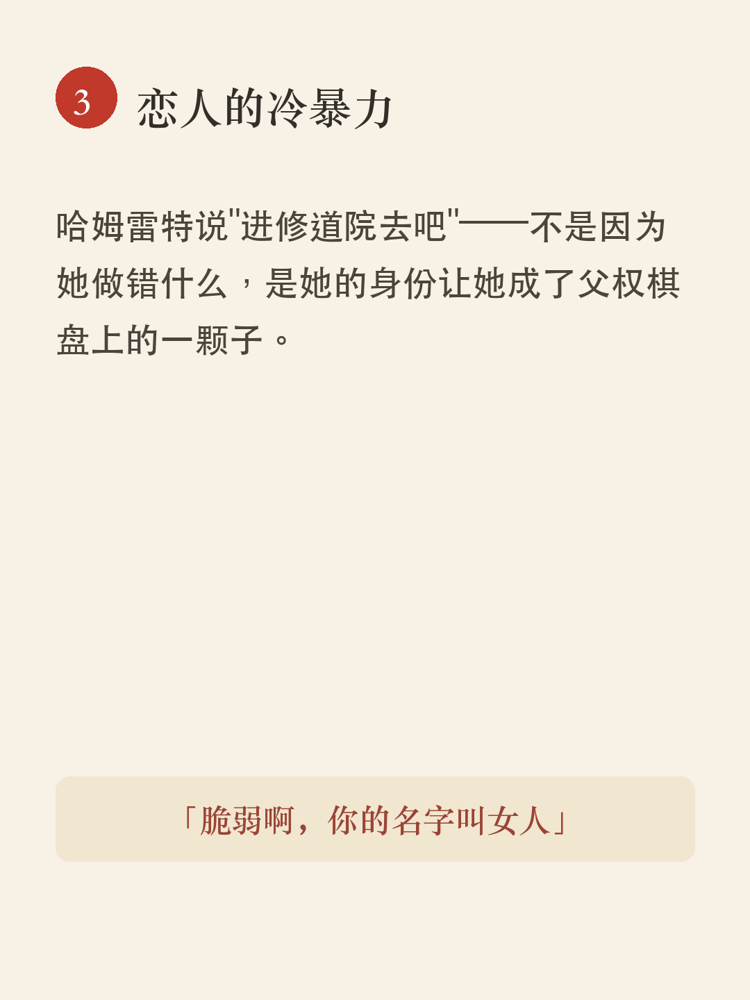
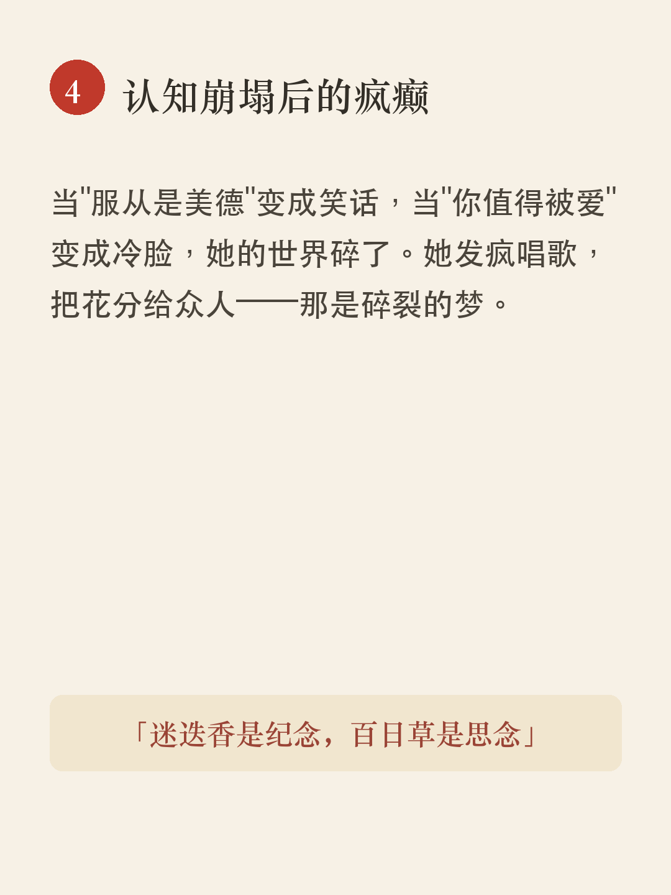
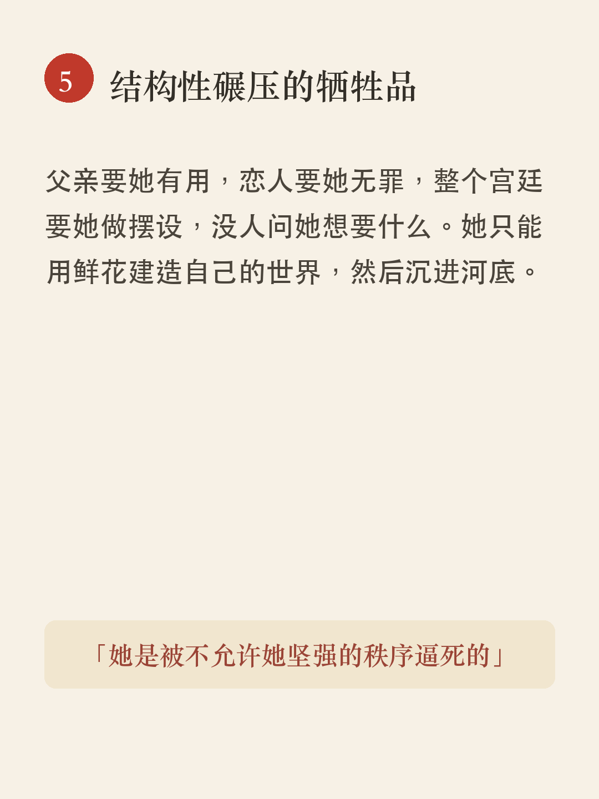
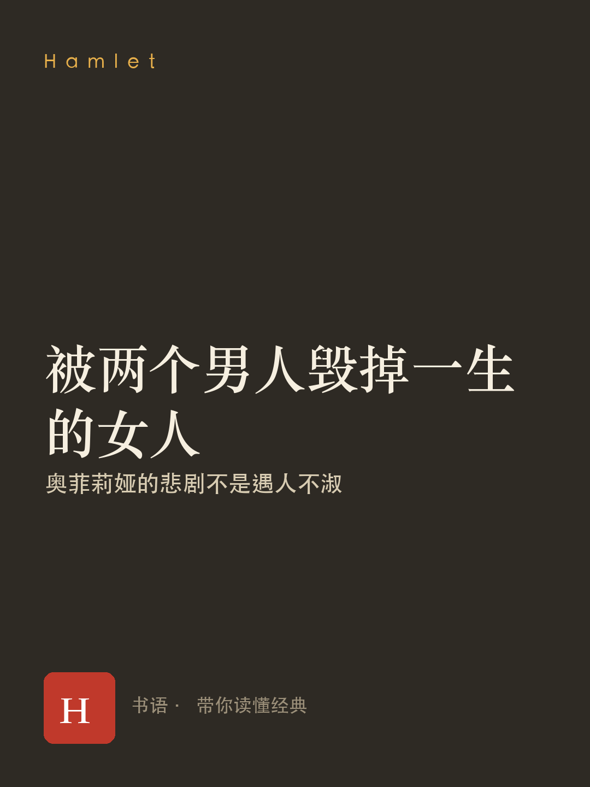
口播稿全文
你有没有注意过，一个女人最惨的悲剧，不是被敌人打败，而是被她最信任的人亲手推进深渊。
《哈姆雷特》里有个女孩叫奥菲莉娅。她爸是御前大臣波洛涅斯，她哥是雷欧提斯，她恋人是丹麦王子哈姆雷特。听起来家世显赫对吧？可你仔细读她的命，四个字——**被围猎**。
先说波洛涅斯。这个父亲表面上疼女儿，实际上把她当棋子。第三幕第一场，国王和波洛涅斯躲在帷幕后面，让奥菲莉娅去试探哈姆雷特——他说的什么、她的反应如何，都回来报告。波洛涅斯自己也躲在帷幕后面偷听女儿与哈姆雷特的对话。后来第三幕第四场，他又躲在王后的帷幔后面偷听，不过那次偷听的是王后和哈姆雷特。波洛涅斯向国王解释哈姆雷特的疯癫时说，这是"爱情的癫狂"——在他眼里，奥菲莉娅不是女儿，是解开哈姆雷特心结的工具。
再说哈姆雷特。这个口口声声说爱她的人，在独白里把对母亲的愤怒倾泻到所有女性身上。“Frailty, thy name is woman”——“脆弱啊，你的名字叫女人”——这句骂的是母亲，可字字都扎在奥菲莉娅身上。因为就在同一时期，他对她说“进修道院去吧”。他怀疑一切，他冷暴力，他把她推开——不是因为她做错了什么，是因为她的姓氏、她的身份让她成了父权棋盘上的一颗子。
奥菲莉娅的反应是什么？疯癫。
不是脆弱，是认知崩塌。一个人如果从小被教导“服从父亲是美德”，结果父亲把她当工具用；从小被鼓励“你值得被爱”，结果爱人突然翻脸嫌她脏——她往哪走？第四幕里她发疯唱歌，把花分给众人，“迷迭香是纪念，百日草是思念”——她以为自己还在做社交礼仪，可那已经是碎裂的梦。
最后她爬上一棵柳树，花圈挂不住了，掉进河里淹死。
葬礼上，哈姆雷特从暗处走出来，说：“I loved Ophelia. Forty thousand brothers could not, with all their quantity of love, make up my sum.”——“我爱奥菲莉娅，四万个兄弟的爱加起来也不够”——可他从没当面对她说过这话。雷欧提斯要为妹妹报仇，他要和哈姆雷特决斗，那是另一个男人之间的权力游戏，奥菲莉娅依然是道具。
读到这里你发现没有：奥菲莉娅的悲剧不是“遇人不淑”那么简单。她是**结构性碾压**的牺牲品。父亲要她有用，恋人要她无罪，整个宫廷要她做体面的摆设，没人问她“你想要什么”。当所有出口都被堵死，当她最珍视的两样东西——父爱和爱情——都变成笑话，她就只能用鲜花和疯话建造一个自己的世界，然后抱着它沉进河底。
所以那句话怎么说的——“脆弱啊，你的名字叫女人”。莎士比亚写这句话的时候，骂的是母亲的软弱，可他没想到，几百年后这句话最刺痛的回响，是写给奥菲莉娅的墓志铭：**她不是脆弱，她是被一种不允许她坚强的秩序，活活逼死的。**
88洞见scene公版✓ 判官过审克劳狄斯的那场祈祷，是全剧最狠的计算
🎬 他跪下祈祷——你以为是忏悔？他其实在精算。
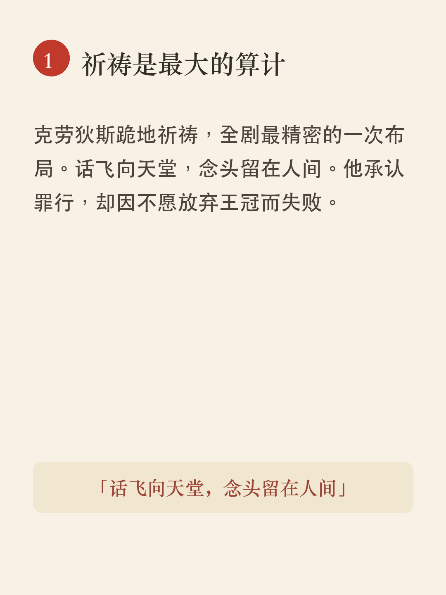
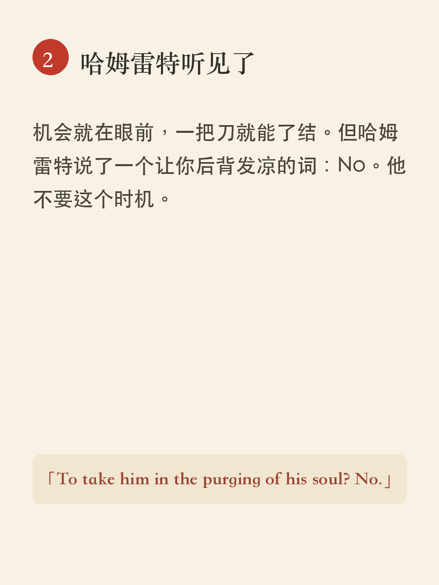
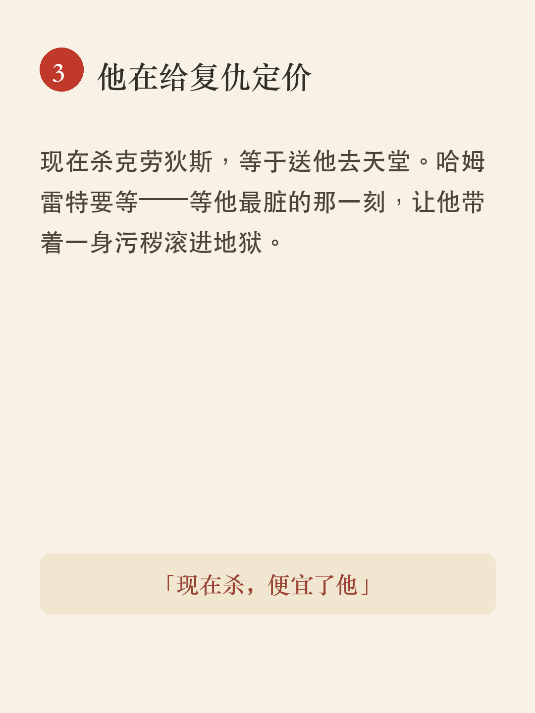
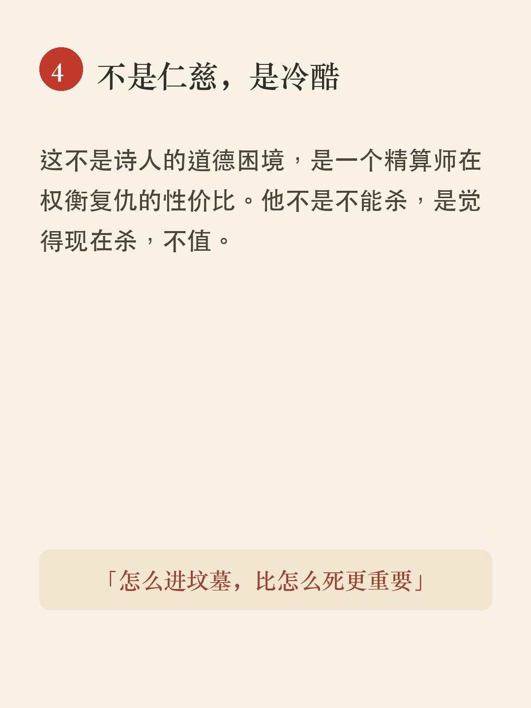
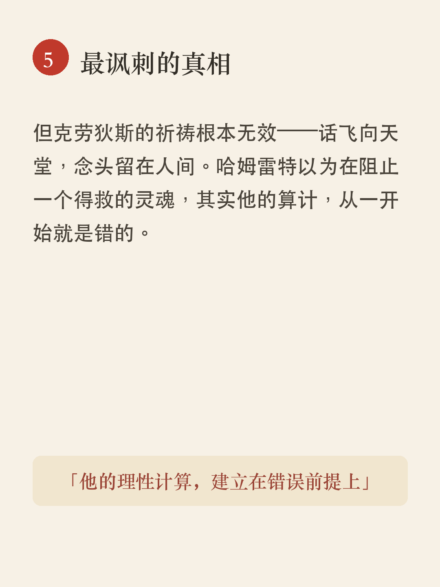
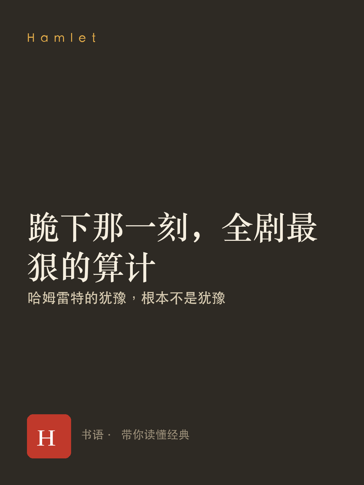
口播稿全文
全剧最狠的一场戏，不是刀剑相向，不是阴谋诡计，是国王跪在地上、双手合十、嘴唇翕动的那一跪。
你以为那是忏悔？错了。那是全剧最精密的一次计算。
克劳狄斯跪下，念了两句台词：
"My words fly up, my thoughts remain below. Words without thoughts never to heaven go."
就这么几个字，撕开了他所有的伪装。话飞向天堂，念头留在人间。但他的祈祷并非全然虚假——他承认自己的罪行，试图忏悔，却因不愿放弃王冠、野心与王后而失败，最终只剩空言。
这就是洞见的第一层：克劳狄斯独自跪在这里，承认“罪恶冲天”，试图忏悔却不能——“Try what repentance can… yet what can it, when one cannot repent?”他知道自己罪孽深重，却不愿放弃王冠、野心与王后。他的祈祷是自我欺瞒与功利计算的交织：不是对全世界的表演，而是给自己一个继续做国王的心理出口。
但真正把这场戏推到极致的，不是克劳狄斯，是哈姆雷特。
他站在暗处，本来有一把刀插进去就是复仇。机会就在那里。但是他听到了国王的祈祷，他开始想——
怎么想？他自己的独白写得清清楚楚。原文里他说：克劳狄斯现在的状态是“in the purging of his soul”，灵魂正在被洗涤，正在“fit and season'd for his passage”，正在准备好通过死亡的通道。
然后他说了一个让你后背发凉的词：No。
他不要这个时机。因为在这个时机杀死克劳狄斯，等于送他上天堂——而他绝不允许这种事发生。
他的原话是：“To take him in the purging of his soul, When he is fit and season'd for his passage? No.”
然后他收剑了。剑说：等下一个时刻。
什么时刻？原文写得明明白白——
醉酒的时候，或者暴怒的时候，或者“在乱伦的床上”、在赌博、在发誓的时候，“about some act that has no relish of salvation in't”。那时候动手，绝不是送他上天堂，而是踢向地狱，让他的灵魂“和地狱一样漆黑”。
这就是哈姆雷特放弃刺杀的那一刻。不是因为心软，不是因为犹豫，不是因为我们以为的“延宕”或“思辨”。是他在算账：现在杀，便宜了他。让他带着洗干净的灵魂走，那是亏本买卖。
他要把克劳狄斯留到最脏的那一刻。让他在罪里死，让他带着一身污秽滚进地狱。
这才是哈姆雷特的逻辑。不是仁慈，是冷酷。不是一个诗人在道德困境里挣扎，是一个精算师在权衡复仇的性价比。
所以你再看这场戏，克劳狄斯的祈祷是自我欺瞒与功利计算的交织，哈姆雷特的放弃是冷酷的算计。两个男人，一个在试图忏悔却因不愿放弃罪之收益而失败，一个在给复仇定价。
而那个在暗处听到这一切的观众——你——终于明白了一件事：哈姆雷特迟迟不动手，不是因为他是懦夫，也不是因为他是诗人。在这一场，他的犹豫是理性的，是冷静的，是在等待一个“最优解”。
只不过那个最优解，是让一个人灵魂坠入深渊。
但这里有一个致命的反讽：观众从克劳狄斯的独白已经知道，他的祈祷根本无效——“My words fly up, my thoughts remain below”，话飞向天堂，念头留在人间。哈姆雷特以为自己在阻止一个得救的灵魂升天，其实是在阻止一个注定下地狱的人多活片刻。他的“理性算计”，建立在一个错误的前提上。这才是本场戏最锋利的地方。
这才是莎士比亚写这个人，写得最可怕的地方。他给你看一个复仇者，你以为他在纠结道德，其实他在优化交易。
他不是不能杀。他只是觉得，现在杀，不值。